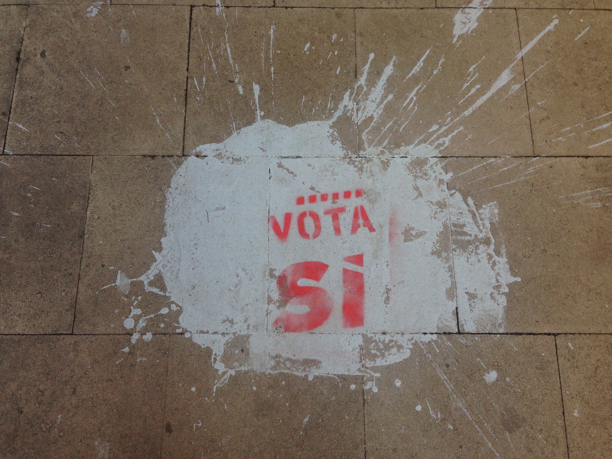

Vota-si: Replaying Twitter Data
In 2017, I helped artist Josecarlos Florez create an installation that replays Twitter data from the Catalan independece referendum vote in October 2017.
Josecarlos created the lovely video above on the project. I really like the project and the kind of spur-of-the-moment connection we made. It is Josecarlos’s idea, I’m just happy that I got a chance to collaborate with him.
Background
In 2017, I was in Barcelona to conduct interviews with people involved in a civic data collection and visualisation project. This was during the Catalan independece referendum vote in October 2017. At that point the city was full of signs and posters encouraging either “Vota Si” or “Vota No”. The first night I was startled by loud metallic banging at 22.00 in the city. I soon learned that the people of Barcelona bang their pots and pans outside in support for the referendum.

A few days later I ended up interviewing a designer and media artist named Josecarlos Florez on his participation in the data project. He participated in the project because he was fascinated by data and how it can be used to influence local political issues. After the interview he started talking about an idea he had for an upcoming installation involving people’s conversation on the referendum on social media. He asked if I knew how to mine Twitter data. I do and I liked the idea and started working on it as soon as I came back to my hotel.
Replaying Twittert Data
Josecarlos’ idea was simple. He wanted to capture tweets based on hashtags associated with the vote and in particular the two sides. Then he wanted to record the timestamps of the tweets and store the timing. This would then be used to play back the tweets on pots and pans, while a display would show the tweets.
| Hastags associated with yes voters | Hastags associated with no voters |
|---|---|
| #Votarem | #NoVotarem |
| #ReferendumCatalan | #NoVotareis |
| #CatalanReferendum | #EspanaSeLevanta |
| #Independencia | #EspanaSaleALaCalle |
| #CatalunaLibre | #EspanaUnida |
| #1oct | #CatalunaEsEspana |
| #1o | #Referendumilegal |
| #EspanaNoSeRompe | |
| #Unidad |
I set up a simple data mining script in preperation for October 1st and captured the data. I used NodeJS to mine the data using the Twitter API and the keywords above. I stored each tweet in a MongoDB and checked for dublicates, e.g. retweets without any comments etc. In order to allow Josecarlos to replay the data, I created a small websocket server, also using NodeJS, and create an entry-point on my website. This allowed him to connect his Arduino setup and replay the data in his installation.
Josecarlos made the brilliant setup in the video above to replay the data on pots using an Arduino and home-made drum-like actuators. The tweets are replayed on the laptop as well.